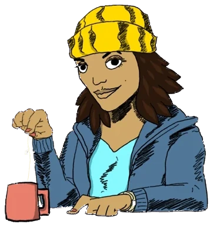

Design Researcher · Behavioral Insights & Service Innovation
Hi, I’m Jude.
I’m a design researcher. I study how people make their way through products and public services, and what gets in their way.

Selected work, 2020–2026
- 01Taxi and for-hire transportation
Spring Valley’s taxi law could see the driver, but not the business behind the ride
Complaints about unlicensed cabs pointed toward tougher enforcement. Talking with every local cab company and reading the village code suggested the law’s definitions were the weak point, and that new penalties would mostly land on small, licensed drivers.
Led the research and drafted the definitions · Local laws adopted by the Village Board · Enforcement effects not yet measured - 02KOALA, product research
Why timeshare owners gave up on the first page of a listing
The listing flow asked for a reservation number many owners never receive, and it lost their progress if they went back a step. Interviews with owners showed where the flow broke down. Letting owners save progress and making some fields optional raised the success rate on that page.
First dedicated UX researcher, 2020–2022 · First-page success rate 33% → 45% - 03Municipal website and facility requests
What happens after a resident submits a form?
Booking a village park or community center used to take two to four trips to Village Hall. I mapped the request from both the resident’s side and the Clerk’s, then set up and tested online requests for seven facilities within the limits of the village’s CMS.
Led the research and the build · Forms Index and online requests live · Online payment awaiting approval - 04Memorial Park flooding
The park floods every few years. What would it take to qualify for state funding?
A new engineering study looked like a prerequisite for a state grant, at a time when the Village was running a deficit. Records requests and written guidance from the state DEC showed that an existing regional report could qualify a narrower project.
Led the investigation · Grant eligibility confirmed · No award or construction yet - 05Master fee schedule
What does it actually cost the Village to process a land-use application?
Fees didn’t track the work: departments estimated a minor site plan at about three days of staff time and a major one at more than a week. I inventoried all 172 fees, traced the roughly 45 that have an application, proposed tiers by size and complexity, and separated outside review costs into applicant escrow.
Led the analysis and proposal · Adopted by the Village Board · Revenue figures are projections
How I work
I start by listening, including for the things people can’t quite put into words. I try to name constraints early and not promise what I can’t deliver. And I pay attention to small details, because those are usually what people run into.